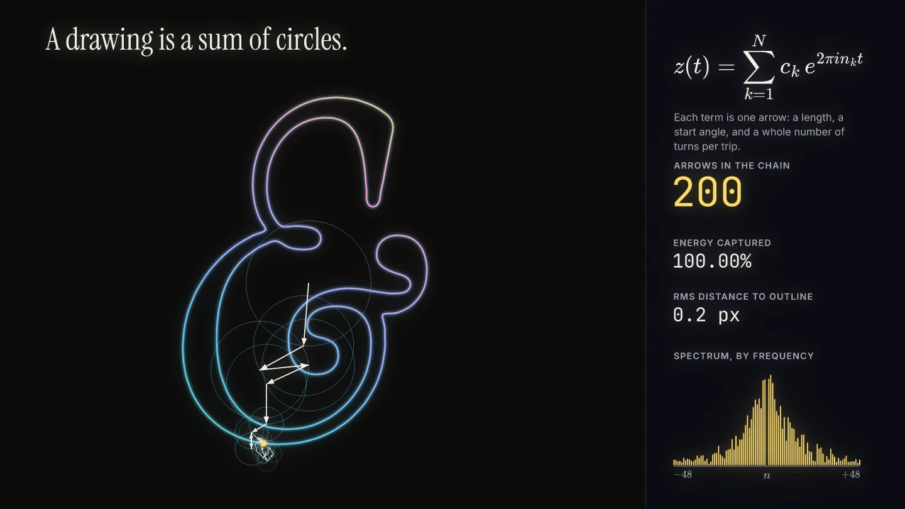
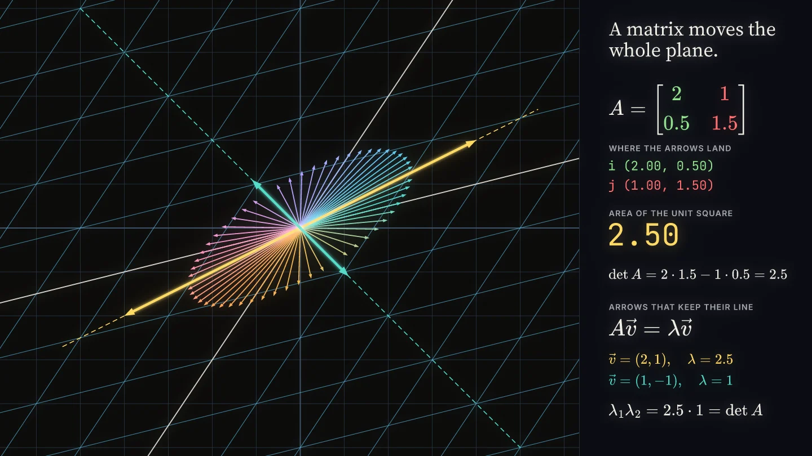
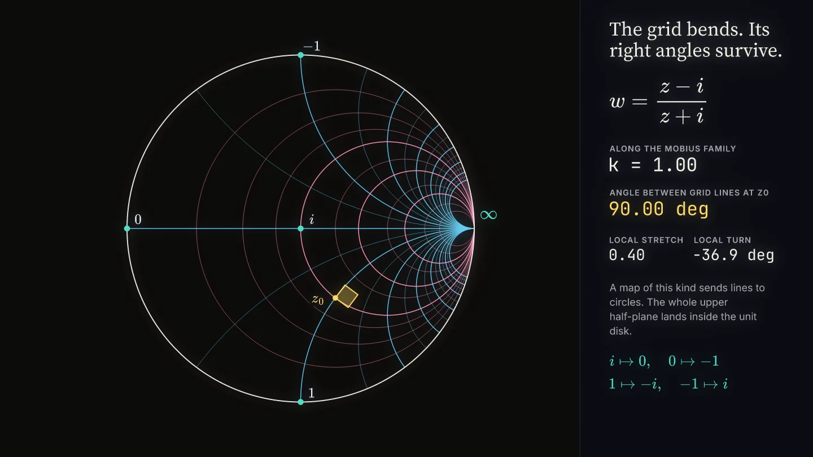
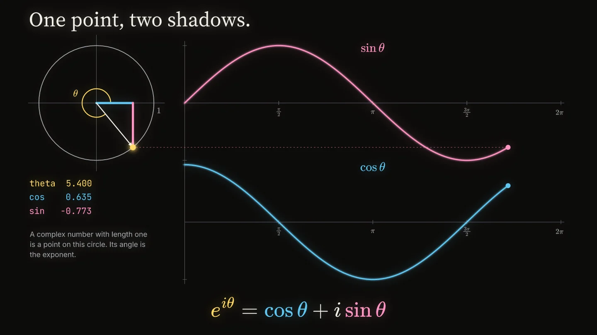
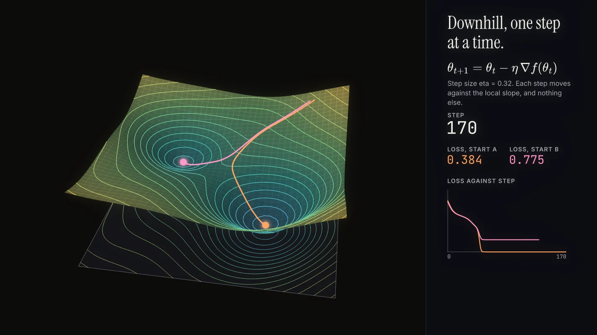
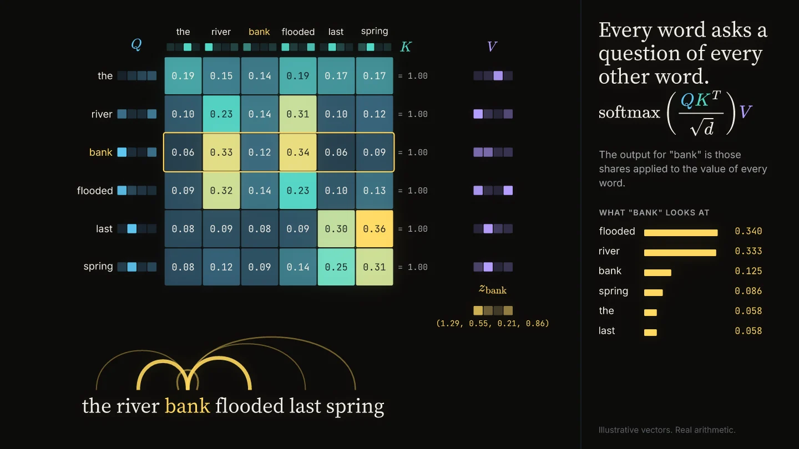

Moving pictures of ideas, written as code.
A vector animation engine and diagram library for TypeScript.
npm install vizmaticThis is not a video. Your browser is drawing these curves right now.v0.8.0, MIT licensed
Scroll. You are the timeline.
A point goes around.
Nothing here is pre-rendered. Scroll back up and it runs in reverse, because every frame is a pure function of time.
Its height is a wave.
Each sample of the curve is computed for the time your scrollbar sets, then drawn as vector paths.
Add circles and it sharpens.
Each new circle is the next odd harmonic. The sum above is typeset with real TeX glyphs, and no LaTeX install is needed.
Enough circles can draw anything.
A discrete Fourier transform of one letter's outline, played as 121 turning circles.
The whole film is this much code.
A film is a plain function. Each s.play writes keys on a timeline, and the highlighted line is the one playing now.
import { axes, dot, draw, dynamic, fadeIn, film, line, morphMatching, tex, write } from 'vizmatic/stage'
export default film({ title: 'The derivative, in a page of code' }, (s) => {
const graph = s.add(axes({ x: [-1, 3.5], y: [-1, 9], width: 1120, height: 780, grid: true }))
graph.at(-300, 20)
s.play(draw(graph.grid), draw(graph.lines), fadeIn(graph.numbers))
const parabola = graph.plot((x) => x * x, { stroke: 'blue', width: 5 })
s.play(draw(parabola))
const h = s.value(1.8)
const secant = dynamic(() => {
const y = (x: number) => 1 + (2 + h.value) * (x - 1)
const moving = 1 + h.value
return [
line(graph.world(0, y(0)), graph.world(3, y(3)), { stroke: 'yellow', width: 4 }),
dot(9, 'teal').at(graph.world(1, 1)),
dot(9, 'yellow').at(graph.world(moving, moving ** 2)),
]
})
s.play(fadeIn(secant))
const ratio = s.add(tex('\\frac{(1+h)^2 - 1}{h}', { size: 72 }).at(590, -160))
s.play(write(ratio))
const result = tex('2 + h', { size: 88, color: 'yellow' }).at(590, -160)
s.play(morphMatching(ratio, result))
s.play(h.to(0.02, { duration: 3.5 }))
s.wait(1.5)
})Press the space bar to pause. Drag the bar to seek. Both directions are instant.
Grab it. It is still just math.
Because a frame is computed when it is needed, a film can take input. These two run on the same engine as every film here.
Drag the tips of the two arrows on the plane. They are the columns of the matrix, and the whole grid follows them.
Move the slider. The curve is recomputed from its partial sum on every frame.
Films, with their source.
Hover to bring one to life. Open one for chapters, the code that made it, and an MP4 to download.

A drawing is a sum of circles
A real Fourier transform of an ampersand, redrawn by a chain of rotating arrows as the term count grows from 1 to 200.

A matrix moves the whole plane
A grid under one matrix: basis arrows, the determinant as area, and the two directions that stay on their lines.

The grid bends, its right angles survive
A grid unfolds under z squared and curls into a disk under a Mobius map, with the angle at every crossing measured live.

One point, two shadows
A point sweeps the unit circle, sine and cosine trace themselves, and the formula collapses into Euler's identity.

Downhill, one step at a time
Real gradient descent on a two-basin loss surface: two starts 0.12 apart travel together, then finish in different minima.

Attention, computed
Queries, keys, and values produce a live heatmap as softmax(QK^T / sqrt(d)) V builds up term by term.
Figures, not slides.
The diagram library packs a page of information into a frame, with type and rules at print density. Ask for larger when you are presenting.

What is different.
Every frame is a pure function of time.
A film compiles to keys on tracks. Sampling any time needs no replay, so scrubbing runs both ways and a scroll bar can drive it.
One source. Browser and MP4.
The same function paints to a canvas and exports frame-exact H.264 on worker threads, about 60 frames per second at 1080p with bloom on 12 threads. On the same machine in the same run, the older layout-based video path reaches about 8 at 720p.
Real math, with no LaTeX install.
Equations are typeset with a bundled TeX engine into vector glyphs. Terms keep their identity, so equations morph term by term.
TypeScript, not Python.
Films are typed modules that run on Node.js 20 or in a browser. Your editor knows every property.
Made for coding agents too.
Plain functions, stable output, an installable skill, machine-readable docs, and a check command that reports problems as JSON.
Diagrams that hold a page of facts.
93 typed components for architecture, data, and science, at print density by default and larger when you ask.
Start with one curve.
npm install vizmatic
npx vizmatic film ./my-film.ts --out ./out